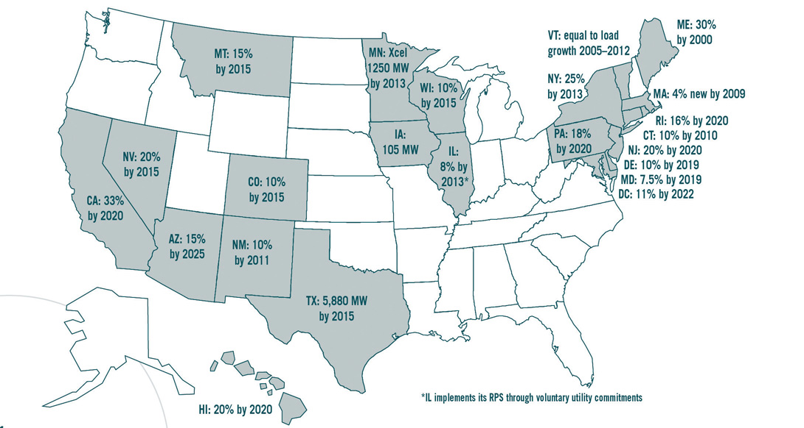

This chapter was co-written by John Holcomb with Ross Gittell and Matt Magnusson.
Why should students study public policyThe actions and decisions taken by government in regards to a particular issue or set of issues. if they are interested in understanding sustainable business but are not necessarily interested in government? What is the role of the government in affecting the market rules and economic potential of sustainable business?
This chapter seeks to answer these questions and provide a foundation for students to understand the important and complex role that government plays with all businesses, including businesses focused on sustainability. The chapter covers the effect of public policy on business, the factors that influence public policy, the different views of the relationship between business and government, and the occurrence of market failures and the role of public policy. The chapter also provides specific examples of US and international policies relevant for sustainable businesses.
Businesses that do not understand the political and public policy contexts that they operate in and are not strategicRelating to the actions of an organization taken to help it fulfill its intended purpose. in their interactions with government are at a competitive disadvantage. For example, wind power providers have to act in the context of a very complex set of local, state, and federal governmental policies that influence their costs of providing wind energy and the price they can charge for their energy. Local zoning laws can prevent the siting of wind turbines because of environmental concerns; concerns about how the turbines will affect local habitats, including bird populations; local noise ordinances; and concerns about potential reductions in local property values due to view disruptions. State laws can determine the market for wind and other renewable energy sources through laws, such as renewable portfolio standards (RPS; see the more detailed discussion that follows), that require state-level electrical energy production to include a certain percentage of energy from renewable sources. And federal laws and programs can provide incentives for investment in renewable energy sources through tax credits and favorable types of tax treatment intended to help to reduce carbon emissions and US dependence on foreign energy sources. All of these public policy considerations and more delayed the Cape Wind Project in Cape Cod, Massachusetts, from going online. The project was first conceived in 2001, received state and local permitting in 2009 and federal permitting in 2010, and is expected to be operational in 2013 (see the following sidebar).
Cape Wind: Public Policy and Renewable Energy (See http://www.capewind.org/article24.htm)
Cape Wind (in Cape Cod, Massachusetts) will be the site of the first large-scale offshore wind farm in the United States. The private developer for the $2.5 billion project is Cape Wind Associates. The project is located on Horseshoe Shoal in Nantucket Sound, 4.8 miles from the nearest shore. One hundred and thirty wind turbines will harness the wind to produce up to 420 megawatts of renewable energy.
Because the proposed turbines are more than three miles from shore, they are subject to federal jurisdiction. However, nearshore infrastructure including roads and power cables make the project subject to state and local laws and regulations. At the state and local level, the project required a water quality certification from the Massachusetts Department of Environmental Protection; access permits from the Massachusetts Highway Department; a license from the Massachusetts Executive Office of Transportation for a railway crossing; orders of conditions from the towns of Yarmouth and Barnstable Conservation Commissions; and road opening permits from Yarmouth and Barnstable.
At the federal level, Cape Wind originally applied for a permit in 2001 from the US Army Corps of Engineers. With the passage of the 2005 Energy Bill, the federal regulatory authority for offshore energy projects was transferred from the Army Corps to the Minerals Management Service (MMS) within the Department of the Interior. While Cape Wind had expected to obtain approval quickly from the Army Corps, this transfer of authority delayed the project. At the federal level, the Federal Aviation Authority was also involved, out of concern that the turbines could cause interference with radar systems and be a hazard to aviation.
In a market economy, government exerts considerable influence on the activities that businesses undertake and on the revenues, costs, and net earnings of businesses. Government and public policies establish the legal system and also the specific rules under which all businesses operate. And government taxes businesses to reflect businesses’ use of public services and to collect revenue to fund government operations.
Businesses are creations of government. Businesses are legal entities created under laws established by government. Government impacts the market economy through not only laws that govern the private market system but also specific policies, regulationsA rule issued by an executive authority or regulatory agency of government that has the same force and effect as actual law., judicial (court) decisions, taxes, and government spending. These government actions are constantly changing and are part of the dynamic operating environment for all businesses. Public policies that address energy use and climate change in the United States and other nations impact all businesses but has specific and important impact on businesses focused on sustainability.
The significant role of government in the private market economy was recognized and highlighted by one of the most frequently mentioned supporters of the capitalist system, Adam Smith. Smith was an eighteenth-century Scottish philosopher and political economy professor. He was the author of The Wealth of Nations written in 1776. In The Wealth of Nations, Smith highlighted the essential role government plays in creating the legal structure, which defines the rules for business transactions, enforces contracts, and grants patents and copyrights to encourage inventions and new products and services.Adam Smith, The Wealth of Nations (New York: Modern Library, 1937), http://www.online-literature.com/adam_smith/wealth_nations.
Smith also highlighted the key role government plays in providing for the public goodsA good where individual consumption does not reduce its availability to others and no one can be effectively excluded from its use (i.e., clean air to breathe). and infrastructure required by all businesses. Smith highlighted the need for common physical infrastructure built with government funding, such as roads and bridges. Public goods extend beyond roads and bridges, there are other public goods shared by all businesses and society more generally including clean air, water, and soil and a sustainable environment for natural resources that businesses depend on.
Many public goods would not be available if their existence depended only on individuals or individual businesses and private markets. For example, it would be too costly for any one business to build an interstate highway to transport its goods or to build and maintain the Internet or to be responsible for protecting the natural environment.
The private market system in general works well to ensure efficient use of limited resources, with efficiency defined as ensuring the best, most highly valued by society, use of resources. But the private market system is not perfect and does not always ensure the best use of society’s resources. The market on its own (without government) works best—and makes the most efficient use of society’s limited resources—when public goods and externalities (see the more detailed discussion that follows) are not involved. It also works best when near perfect information about how private market activities affect so-called third parties (those who are not directly involved in the market activities) is readily available. For example, if full information was available about the risks involved in British Petroleum (BP) offshore operations in the Gulf of Mexico, BP might, for investor, consumer market, and public relations purposes, have not assumed the operational risks that they did prior to the Gulf oil spill. When market and information failures occur (see as follows for more discussions), governmental intervention can help to facilitate a more efficient private market economy.
The US and other governments are also important in efforts to ensure an overall strong and resilient economy. A key part of a resilient economy is one based on stable, safe, and secure forms of energy. The attention of government and governmental leaders to a new (what has been called) energy economy is reflected in US Secretary of Energy Steven Chu’s May 2010 commencement speech at Washington University:
In order to meet the energy and environmental challenges we face, we will need nothing less than a second industrial revolution. The first Industrial Revolution supplanted human and animal power with machines powered by fossil fuel. Today, we use the power of two horses to dry our hair. We go to the local market under the pull of hundreds of horses, and fly across our continent with a hundred thousand horses. A second industrial revolution is needed to provide the world’s energy needs in an environmentally sustainable way. America has the opportunity to lead in this new industrial revolution and build the foundation of our future prosperity. Alternatively, we can hope that the price of oil will return to $30 a barrel and that climate change is not a serious threat. If we are wrong, we will be importing the new energy technologies developed by Europe and Asia.
Energy Volatility
Energy volatility is a major source of concern for all businesses. In March 2011, the price of a barrel of oil was up to $115 a barrel. This is significantly higher than prices even just five years ago when they were closer to $50 a barrel and ten years ago when oil traded at around $20 per barrel.
In the United States, macroeconomicActivities and interactions of the entire overall economy as opposed to individual business activities. efforts are primarily influenced by the executive branch of government, which includes Secretary Chu’s US Department of Energy and the Federal Environmental Protection Agency (EPA) and also includes the Office of the President, the Departments of Treasury and Commerce, and the Federal Reserve System.
An example of a US government initiative to bolster the general (macro) economy is the 2009, $787 billion economic stimulus plan, also known as the American Recovery and Reinvestment Act of 2009 (ARRA). The ARRA was approved by federal legislation acted on by the US Congress and supported by President Obama. This stimulus plan sought to stabilize employment and encourage business investment and household spending. It included more than $80 billion to support the generation of renewable energyEnergy produced by natural resources that are replaced relatively quickly. Renewable energy resources include biomass, hydro, geothermal, solar, wind, ocean thermal, wave action, and tidal action. In 2009, approximately 8 percent of all energy consumed in the United States was from renewable resources. sources; energy efficiencyTechnologies that reduce the energy required to perform the same level of output.; expanding manufacturing capacity for clean energy technologyA consumer-friendly term for technologies that produce energy with no or reduced pollution emissions. This includes renewable and energy efficiency technologies.; advancing vehicle and fuel technologies; and building a bigger, better, smarter electric gridElectricity distribution system that uses real-time useful (smart) information to influence the use of energy. The goal is to minimize peak demand and overall energy use..
The American Recovery and Reinvestment Act (ARRA) provided all US states with funds for energy efficiency, renewable energy, and weatherizationModifying a building to reduce its energy consumption through energy efficiency technologies. This includes improved insulation and sealing drafts to increase airtightness. programs. These were one-time funds to be spent or committed within two years. The short-term goals for this funding were to create and retain jobs, to achieve energy savings and greenhouse gas reductions, and to encourage energy efficiency improvements in all sectors of the economy. The long-term goals were to strengthen energy efficiency and renewable energy infrastructure, reduce barriers to increasing efficiency and renewable energy, build professional capacity, educate the public, and lay the groundwork for transforming markets so that energy efficiency and renewable energy efforts would be sustained after the ARRA funding was spent.
Texas Department of Housing and Community Affairs (TDHCA): Weatherization Assistance Program (http://www.tdhca.state.tx.us/ea/wap.htm)
The Texas Department of Housing and Community Affairs (TDHCA) operates the Weatherization Assistance Program with funds from the US Department of Energy (DOE) and the US Department of Health and Human Services’ Low Income Home Energy Assistance Program (LIHEAP). WAP is designed to help low-income customers control their energy costs through installation of weatherization materials and education. The program goal is to reduce the energy cost burden of low-income households through energy efficiency.

Weatherization.
The main US federal government agency involved with protecting the environment is the EPA. The EPA’s priorities as of 2012 included taking action on climate change, improving air quality, ensuring the safety of chemicals, and protecting America’s waterways (http://blog.epa.gov/administrator/2010/01/12/seven-priorities-for-epas-future). The US Department of the Interior is also involved in protecting the environment and managing the nation’s environmental resources.
Many of the US states, and in particular California and Massachusetts, have also been very active in energy and environmental policies to address climate change. Colorado became the first US state to create a renewable portfolio standard (RPS) by ballot initiative when voters approved Amendment 37 in November 2004.“Colorado,” DSIRE, http://www.dsireusa.org/incentives/incentive.cfm?Incentive_Code=CO24R. The original version of Colorado’s RPS required utilities serving forty thousand or more customers to generate or purchase enough renewable energy to supply 10 percent of their retail electric sales. Eligible renewable energy resources include solar-electric energy, wind energy, geothermal-electric energy, biomass facilities that burn nontoxic plants, landfill gas, animal waste, hydropower, recycled energy, and fuel cells using hydrogen derived from eligible renewables. As of 2011, thirty-nine states had mandatory renewable or alternative energy standards or goals in place. These typically require or target a certain percentage of energy be procured from renewable sources. This expands the markets for renewable energy providers. States also are involved in environmental protection, with most states having an agency dedicated to protecting the environment, such as Florida’s and Massachusetts’ Departments of Environmental Protection.
Ten states in the Northeast are participating in the Regional Greenhouse Gas Initiative (RGGI), the first regional initiative to reduce carbon emissions from power generation. RGGI institutes a cap-and-trade system for greenhouse gas emissions from power generators and uses funding from the selling of carbon allowancesPermits to generate pollution. Typically, they are in increments of one ton of pollution and most often pertain to air pollution. to promote energy efficiency. And there are similar regional efforts starting in other parts of the nation.
Also some local governments in the United States stand out with regards to policies to address climate change and protect the natural environment. Portland, Oregon, was named the Greenest City in the nation in 2008.“America's 50 Greenest Cities,” Popular Science, February 8, 2008, http://www.popsci.com/environment/article/2008-02/americas-50-greenest-cities?page=1. The city’s policies encourage renewable energy usage, support public transportation and biking, and require building’s with low environmental impact. These policies have resulted in half the power used in the city coming from renewable sources; a quarter of the workforce commuting by bike, carpool, or public transportation; and thirty-five buildings certified by the US Green Building Council.
European nations have been more active than the US federal government in the establishment of comprehensive policies to address climate change, and this has implications for sustainable businesses (see more discussion with examples as follows). In Europe, national governments have guaranteed prices for energy from solar and wind. Germany, Spain, and other European nations are now among the leaders in global exports in renewable energy, wind power, and solar power technologies. And recently, China has emerged as one of the most attractive markets for investment in renewable energy.Ernst & Young, Renewable Energy Country Attractiveness Report (2010).
There are “winners” and “losers” with all public policies. In many US states with increased governmental requirements for the use of renewable energy (such as wind and solar power), incentives and financial support has led to new investment in renewable energy and energy efficiency, which increases business opportunity for companies providing clean technology products and services that enhance energy efficiency benefit. All the while generators of electricity using nonrenewable sources, such as coal, natural gas, and other fossil fuels, have experience decreased sales, increased costs, and declining profits as a result of the same policies.
Public policy is a complex and multifaceted process. It involves the interplay of many parties. This includes many businesses, interest groups, and individuals competing and collaborating to influence policymakers to act in a particular way and on a variety of policies. These individuals and groups use numerous tactics to advance their interests. The tactics can include lobbying, advocating their positions publicly, attempting to educate supporters and opponents, and mobilizing allies on a particular issue. Perfect policies rarely emerge from the political process. Most often policy outcomes involve compromises among interested parties.
When a business considers which policy to support and advocate for, considerations include what is in their best interest—that is, which policy could help the business achieve the greatest profits. Other considerations include the policy’s political feasibility, whether a majority of others will support the policy, and also how cost effective and efficient the policy would be in achieving the desired outcome. For an example, the cost of a policy of zero carbon emissions would be prohibitive. While the benefits of zero carbon emissions might be high, it would be impossible to achieve without very high economic cost. In contrast, a phased, for example, 5 percent to 10 percent in five to ten years, reduction in carbon emissions from motor vehicles would be a more reasonable and cost effective policy. Equity is another consideration; is the policy fair, are the benefits from the policy equitably distributed, and are the costs of the policy shared fairly?
Public policies are influenced by a variety of factors. These factors include public opinion, economic conditions, new scientific discoveries, technological change, interest groupsAssociations of individuals or of organizations that form to advance a common political, economic, or social agenda., nongovernmental organizationsAn organization that is not a private company and does not have formal affiliation or representation with government. These groups often try to impact private business behavior either directly or indirectly by being influential in shaping public policy. (NGOs), business lobbyingAttempts to use information, research, or stakeholder opinion to influence governmental policy by an individual or organization., and other political activity.
As a result of the wide variety of influencing factors that tend to pull and push policy in different directions, public policy change often happens slowly. Absent a crisis, and sometimes even during a crisis, the influencing factors can tend to check and counteract each other, slowing the development and implementation of new policy and tending to lead to incremental rather than radical changes in public policy. And often, the influencing agents are more effective in blocking policy change than in having new policies adopted—as has been the case with comprehensive climate change policy at the US federal level and resistance from some large energy companies.
Public opinion and priorities have strong influence on public policy over time. Relevant to sustainable businesses is the increasing public concern about the environment, volatile energy prices, and global climate change. This is influencing public policy through electoral politics, citizen rallies, and actions that affect governmental decision makers. Also influencing public policy relevant for sustainable businesses are new scientific findings and information, such as new findings about climate change and the human and business impact on climate change (see Chapter 2 "The Science of Sustainability" for more details).
Economic conditions also significantly affect the policy environment and operating context for businesses. The Great RecessionOne of the most severe recessions or contraction of the US economy. It officially began in December 2007, lasted eighteen months ending in June 2009. Almost nine million jobs were lost in this recession. at the end of the first decade of the twenty-first century enhanced interest and support for public investments and incentives (including in energy efficiency and renewable energy) that could help to create jobs.
Technology advancements—often motivated by market and business opportunities—also affect public policy. Technology is constantly changing and this affects the business environment directly and also indirectly as public policies change with technological inventions. New, lower-cost, and easier-to-use technologies can increase public support for policies that promote renewable energy and energy efficiency and that reduce environmental damage. Examples of these include new designs and materials for packaging that reduce environmental costs, new technology that achieves mass production of full-spectrum solar cells that reduces the cost of solar energyCheap, common solar panels in production now typically only use a small percentage of the light hitting their surface, as the semiconductor materials in them only respond to certain segments of the solar spectrum. Though highly efficient solar panels that respond to the full spectrum of light have been created in the past, it has been hard to mass produce them., and programmable thermostats integrated with mobile communication (see discussion of Nest thermostats in Chapter 5 "Entrepreneurship, Innovation, and Sustainable Business") that make energy efficiency actions by households easier to do.
Interest groups include business and trade associations, professional organizations, labor unions, environmental advocacy organizations, and cause-oriented citizen groups and lobbies. Individuals and businesses also organize into associations and interest groups for other reasons than to try to influence government. This includes for promotional and educational efforts, to support specific activities that are relevant to members (such as clearing and preservation of hiking trails by the Appalachian Mountain Club), and to provide members with select benefits (such as access to cleared trails). Interests groups advocate for public policies that serve the desires of their members and further the mission of their organizations (e.g., environmental interest groups supporting legislation to improve air quality by reducing carbon emissions).
Business efforts to influence public policy and government include not only individual company efforts but also business associations. These associations act collectively to promote public policies in the best interest of business in general and also in the interest of specific industries and localities. Examples of business associations engaging in efforts to influence public policy include the US Chamber of Commerce, the National Association of Manufacturers, the state-level business and industry associations, and the local chambers of commerce. The US Chamber of Commerce is the world’s largest business organization, representing the interests of more than three million businesses of all sizes, sectors, and regions.
US Chamber of Commerce.
Source: Wikipedia, http://en.wikipedia.org/wiki/File:US_CoC_Logo.png.
Since the Toxic Substances Control Act took effect in 1976, the Environmental Protection Agency (EPA) has tested only two hundred of the eighty thousand chemicals in commerce and has regulated only five.
The American Academy of Pediatrics in 2011 called for an overhaul of the thirty-five-year-old federal law governing toxic chemicals in the environment, saying it fails to safeguard children and pregnant women.
“It is widely recognized to have been ineffective in protecting children, pregnant women and the general population from hazardous chemicals in the marketplace.”
Among the American Academy of Pediatrics’ recommendations were the following:
“Right now, a company manufactures a chemical and puts it out on the market and reaps the economic reward,” said Dr. Jerome Paulson, lead author of the policy statement. “And then the public is responsible for trying to figure out if there is any harm associated with the use of that chemical. And then it’s almost a criminal procedure, requiring proof beyond a reasonable doubt.”
Toxic waste.
Individual businesses and different business groups differ on many public policies. For example, the American Academy of Pediatrics differed from the American Chemistry Council (http://www.americanchemistry.com/Membership/MemberCompanies) on revisions to the Toxic Substances and Control Act. And in the fall of 2009, Nike, Apple, and two major utilities—California’s largest utility, Pacific Gas and Electric (PG&E), and New Mexico’s largest utility, Public Service Company of New Mexico—left the US Chamber of Commerce because of the organization’s stance against policies to address climate change.Maria Surma Manka, “Irreconcilable Differences: Utilities Leave U.S. Chamber of Commerce, Cite Climate Change,” Earth & Industry, http://bit.ly/MgYDUW.
An excerpt from PG&E CEO Peter Darbee’s resignation letter to the US Chamber of Commerce read as follows:
We find it dismaying that the Chamber neglects the indisputable fact that a decisive majority of experts have said the data on global warming are compelling and point to a threat that cannot be ignored. In our view, an intellectually honest argument over the best policy response to the challenges of climate change is one thing; disingenuous attempts to diminish or distort the reality of these challenges are quite another…I fear it has forfeited an incredible chance to play a constructive leadership role on one of the most important issues our country may ever face.
In contrast to the US Chamber of Commerce, the United States Climate Action Partnership (USCAP) was a group of businesses and leading environmental organizations that came together to call on the federal government to enact strong national legislation to require significant reductions of greenhouse gas emissions. USCAP had issued a landmark set of principles and recommendations to underscore the urgent need for a policy framework on climate change.USCAP, A Call for Action, http://us-cap.org/USCAPCallForAction.pdf.
The members of USCAP included some of the largest, best-known, and most highly respected companies in the United States including Alcoa, Chrysler, the Dow Chemical Company, Duke Energy, DuPont, Exelon Corporation, Ford Motor Company, General Electric, General Motors Company, Honeywell, Johnson & Johnson, PepsiCo, PG&E Corporation, Shell, Siemens Corporation, and Weyerhaeuser. The members believed that swift legislative action in 2009 based on the USCAP solutions-based proposal titled Call for Action would encourage innovation, enhance America’s energy security, foster economic growth, improve our balance of trade, and provide critically needed US leadership on this vital global challenge.
On the other side are those who deny that there has been significant climate change. Climate change denial is a set of organized attempts to downplay, deny, or dismiss the scientific consensus on the extent of global warming, its significance, and its connection to human behavior. Climate change denial has been mostly associated with the energy lobby and free market think tanks, often in the United States.
A nongovernmental organization (NGO) is an organization that is not a private company and does not have formal affiliation or representation with government. These are interest groups (see the preceding definition), and they often try to influence private business behavior either directly by persuasion or protest or indirectly by being influential in shaping public policy. There are currently thirty thousand to forty thousand NGOs globally, and that number keeps expanding as the groups gain support and legitimacy. This includes many environmental organizations.
There are many NGOs influencing the operating context for sustainable businesses. Table 3.1 "Examples of NGOs That Influence Sustainable Business" lists some of the NGOs active in support of sustainable business activities in the United States.
Table 3.1 Examples of NGOs That Influence Sustainable Business
| NGO | Description |
|---|---|
| Ceres | Ceres collaborates with investors and environmental and public interest groups to change the marketplace such that consumers and businesses purchase from companies that incorporate sustainability into their business practices. Ceres developed the Global Reporting Initiative to help companies report sustainability performance in the same way as financial information. Ceres’s reporting efforts are discussed in greater detail in Chapter 4 "Accountability for Sustainability". |
| The Nature Conservancy | Established in 1951, the Nature Conservancy is one of the world’s oldest and largest environmental NGOs. It focuses on using science and conservation to help businesses mitigate their environmental impact, specifically in areas of biodiversity, fresh water, forestry, and land management. |
| Sustainable Apparel Coalition | The coalition includes companies like Walmart, JCPenney, H&M, and Hanes, along with more traditionally environmentally minded manufacturers of rugged outdoor clothing like Patagonia and Timberland. The coalition is currently developing a comprehensive database of the environmental impact of every manufacturer, component, and process in apparel production, with the aim of using that information to eventually give every garment a sustainability score. |
Figure 3.2 Satellite Image of Blue Dye and Other Chemicals Washing Downriver from Textile Mills in Xintang, China—the World Capital of Blue Jeans Production

Since businesses are strongly affected by public policies, it is in their best interest to stay informed about public policies and to try to influence governmental decision making and public policy. There are different general ways that businesses view and act on their relationship with government. One perspective is for businesses to consider business and government on “two sides” and in opposition to each other. Some have argued that this was the prevailing dominant mainstream business view in the aftermath of the Great Recession at the end of the first decade of the twenty-first century. It has been characterized as the “antiregulatory” or “limited government” view, and it has been associated with those who believe that free markets with a minimal government role is best for the workings of the economy. This perspective most often focuses businesses’ interactions with government on efforts to minimize government and reduce the costs and burdens on private business and the general economy associated with government taxes, regulations, and policies.
Another business perspective on government is that government should favor businesses and incentivize business performance and investment because businesses are the main source of jobs, innovation, and societal economic well-being, and therefore government should support businesses with grants, tax credits, and subsidies.
A third general view of businesses and government relations is with business in partnership with government in addressing societal matters. This is in contrast to government being the regulator to ensure businesses act in a socially responsible manner.
These views are not mutually exclusive. For example, the same solar business can use some of its interaction with government to try to maximize the benefits, such as favorable tax credits, it receives from government and at the same time work in partnership with government to achieve a social purpose, such as reducing carbon emissions, and then try to minimize its tax obligations. It is also important, as described by Pacific Gas and Electric (PG&E) CEO Peter Darbee previously, that the focus of business and government relationships should be on the type of policies required in response to societal challenges rather than an ideological response about the proper role of government in a free market economy.
Sustainable businesses, such as the companies presented in the case study chapters in this textbook—such as Stonyfield Yogurt, Oakhurst Dairy, and Green Mountain Coffee—tend to focus on their responsibility to the environment and societal impact and also tend to recognize that government policies and programs are often necessary to help them achieve their objectives and therefore are inclined to try to work with and even partner with government to achieve desired ends. It is always important for sustainable businesses to understand how their efforts to achieve profits and to serve a social purpose are both strongly influenced by government policies, and it is always important for sustainable businesses to manage their relationships with government (local, state, national, and international) effectively.
Once a business has an understanding of how government affects their operations and profitability, it can formulate strategies for how best to interact with government. There are three general types of business responses to the public policy environment—reactive, interactive, and proactive.
Reactive responses involve responding to government policy after it happens. An interactive response involves engaging with government policymakers and actors (including the media) to try to influence public policy to serve the interests of the business. A proactive response approach entails acting to influence policies, anticipating changes in public policy, and trying to enhance competitive positioning by correctly anticipating changes in policy. For most businesses, a combination of the interactive and proactive approaches is the best approach.
In meeting challenges from nongovernmental organizations (NGOs) and the media, businesses may respond in a variety of ways, including the following:
When business is in a reactive response mode, it most often engages in confrontation of its adversaries. When it assumes an interactive response mode, it participates in dialogues with NGOs and the media and develops partnerships or coalitions to advance new policies and programs. When business behaves in a proactive manner, it anticipates future pressures and policy changes and adjusts its own internal corporate policies and practices before it is forced to do so. While a reactive stance may sometimes work, it often only delays needing to engage in a more interactive or proactive way. An interactive or proactive approach is usually a better way to meet political and societal challenges while also protecting the reputation of the firm.
Home Depot and Rainforest Action Network: From Combative to Collaborative Relationship
Home Depot’s relationship with the Rainforest Action Network (RAN) on the issue of preserving old-growth forest began as combative and reactive but wound up being collaborative and interactive. After discussions with RAN, Home Depot agreed to sell only lumber that was certified as grown from sustainable forests.
Businesses often engage in a variety of tactics to influence government policy. This includes lobbying, political contributions, and interest group politics.
Businesses lobby in different ways. This can include lobbying of Congress and state legislatures and executive branch agencies directly through its own government relations specialists, through an industry trade association, through consultants, or through a combination of all those avenues. Businesses may also engage in indirect or grassroots lobbying by appealing to its own employees, stakeholdersAny person, group, or organization affected by an organization’s actions. For businesses, it can include owners and investors, employees, customers, suppliers, and all members of society affected by the organization., or the general public to make their views known to policymakers. In order to build a broad grassroots constituency, business may manage “issue advertising” campaigns on top-priority issues, or purchase issue ads in media outlets that target public policymakers or Washington insiders.
Business lobbying has a strong influence on public policies. There are more than 1,500 private companies in the United States with public affairs offices in Washington, DC, and more than 75 percent of large firms employ private lobbyists to make their case for policies that can benefit them. This includes more than 42,000 registered lobbyists in state capitals across the nation.
Business may engage in reactive defensive lobbying (defending its own freedom from government regulation) or interactive lobbying (partnering with interest groups on policies that the firm can benefit from). Businesses can also choose to engage in social lobbying, examples of which include chemical companies with the best environmental track record joining environmental NGOs in lobbying for an increased budget for the Environmental Protection Agency (EPA) and retailers wanting to address consumer concerns joining interest groups in pressuring the Consumer Product Safety Commission to adopt more stringent product safety standards. Corporations showing a willingness to join such public interest coalitions can gain reputational rewards from NGOs, the media, and public policymakers.
In 2010. energy companies spent more than $2.5 billion to lobby members of the US Congress, according to the Center for Responsive Politics. While oil, gas, and utility companies spent most of that money, renewable energy lobbying efforts were also sizable.
Source: Stephen Lacey, “Top 25 U.S. Energy Lobbyists of 2010,” Renewableenergyworld.com, http://www.renewableenergyworld.com/rea/news/article/2010/12/top-25-u-s-energy-lobbyists-of-2010.
Businesses also use campaign contributions to support their position and to try to influence public policies that can help them increase profits. Seven of the ten largest corporations in the world are oil companies, based on revenues. Their access to funds for lobbying and campaign contributions gives them a significant voice in the political system and on policies that can impact sustainable businesses.
There are a range of avenues a company might use in making political contributions. The most transparent and legitimate is that of forming a political action committeeA private group organized to elect political candidates or promote a particular policy or political cause. (PAC) to which voluntary contributions of employees are amassed and then given in legally limited amounts to selected candidates. Not surprisingly, larger firms in regulated industries, or in industries exposed to greater risk from changing public policies, such as oil companies in 2010 during and after the British Petroleum (BP) Gulf of Mexico oil crisis, use PACs more often than other firms. Beyond contributing directly to political candidates, firms can also advertise on ballot measure campaigns, and those contributions can come from corporate assets and are subject to no legal limitations.
A 2010 US Supreme Court decision, Citizens United v. Federal Election Commission ruled that the government could not ban independent political spending by corporations, as well as labor unions and other organizations, in candidate elections. This has led to rise of what have become known as “super PACS.” In the 2012 Republican presidential primary, about two dozen individuals, couples, or corporations gave $1 million or more to Republican super PACs to try to influence the primary election.
Business response can include participation in interest group politics. Interest groups play a key role in all democratic systems of government. However, as an interest group is a group of individuals organized to seek public policy influence, there is tremendous diversity within interest groups. Business is just one of many interest group sectors trying to influence public policy (see the discussion previously mentioned). Businesses will encounter interest groups that may support or conflict with their position on an issue.
Businesses face a complex array of formal and informal public policy actors beyond (just) government. Business practices can be strongly influenced by citizen actions that bypass the formal institutions of government. Though they lack the economic clout and resources of industry as tools of influence, citizen groups do possess other tools. They can lobby and litigate, and they can get out large groups to demonstrate in public events and use exposure in the news media as a vehicle for getting their perspective heard.
Businesses are influenced by direct citizen activism and protest. Organized interests and nongovernmental organizations (NGOs) have been the source of influence. After their experiences in affecting public policy in the 1960s and 1970s, many citizen activists grew skeptical of the government’s ability to respond rapidly and effectively and discovered they could often accomplish their objectives more directly and quickly. Citizen groups have both confronted and collaborated with corporations in order to foster change.
Finding that confrontation is often counterproductive and that government lobbying is protracted and ineffective, NGOs often turn to collaboration with business to resolve issues. Indeed, as both sides have matured and grown less combative, business and NGOs have learned to work together to resolve problems. There are many examples of such productive collaboration, the most prominent of which have emerged on the environmental front. For example, the Rainforest Action Network (RAN) has worked with Home Depot, Lowe’s, and several timber companies in an initiative to protect old-growth forest. RAN combines elements of activism and even militant protest along with peaceful collaboration.
The EDF is an example of an NGO working cooperatively, in contrast to a confrontational approach, with corporations. The EDF was an early actor in this way. In November 1990, the Fund began to work with McDonald’s to help the company phase out its polystyrene clamshell food containers. It was a collaborative effort to significantly reduce McDonald’s negative environmental impact by cutting its solid waste. It was the first major partnership between an environmental group and a Fortune 500 company in an era when environmental and business interests were often at odds. EDF and McDonald’s worked together to develop a new solid waste reduction plan. The initiative eliminated more than 300 million pounds of packaging, recycled 1 million tons of corrugated boxes, and reduced waste by 30 percent in the decade following the initial partnership, and this was all achieved at no additional cost to the company.
Beyond the traditional political tactics, NGOs also have developed new tactics to pressure business. Ralph Nader pioneered the use of the shareholder resolution to protest such corporate actions as discriminatory hiring, investment in South Africa, nuclear power, environmental impacts, and corporate campaign donations. Since the 1970s, religious organizations, most prominently the Interfaith Center on Corporate Responsibility, have been the chief sponsors of such resolutions. More recently, they have been joined by mainstream shareholder groups, such as large institutional investors and pension funds, in calling for major changes in corporate governance and more recently for more attention to businesses’ environmental footprint and contribution to greenhouse gas emissions and global warming.
Businesses have to also understand the importance of another actor in the business and public policy sphere—the news media. The media provides important functions for both society and business. For example, it influences the public policy agenda by filtering the various events and interest-group areas of attention and it can serve as a sort of “watchdog” over both business and government exposing any unethical practices. Business must constantly monitor the media and be ready to respond. In particular, since the media are usually a pivotal actor in any corporate crisis, company “crisis management” plans must include steps for dealing appropriately with the media and other critics.
Government interventions in a private market economy are intended to correct so-called market failures or to achieve a societal objective. We focus here on government interventions to correct private market failures. Market failuresInstances in which the private market fails to allocate societal resources in the most economically efficient manner. can justify government intervention on market efficiency (economic) criteria. A key type of market failure that government tries to address in regulations and laws are externalities. Government policies are also used to address societal concerns that are associated with private market economies, such as economic inequalities. For sustainable businesses, the most relevant market failures are externalities, and we focus on these as follows.
An externality occurs when a so-called third party who is not directly involved in an economic transaction is affected by that market transaction. For example, when pollution produced by a private company negatively impacts the air quality and natural environment and harms the health of others. Externalities typically are considered in a negative context but can have either a positive or a negative impact on the third party. Government can constructively intervene when an externality in a private market transaction has a negative impact on a third party and the third party does not receive any compensation for the negative impact.
In the absence of government intervention, when externalities exist, market prices do not reflect the full costs or benefits in the production or consumption of a good. In the case of external costs, such as pollution, producers may not bear all the societal costs of production, and this would translate to lower prices to consumers than they should pay. For market efficiency purposes consumers should pay the full costs, private and social, of the products and services they consume. If an individual or business does not pay the full (private and social) costs of goods and services they consume, this would cause a good to be overproduced and overconsumed while pushing additional costs on to individuals not involved in the transaction. In the case of pollution, a company could profit by not paying the true cost of managing its waste, and others (i.e., the broader public) would be burdened by the costs—including loss of natural resources, loss of pleasure from the environment because of environmental degradation, and public health problems caused by the pollution.
Oil and oil sales and consumption can have high external costs to society beyond the price charged by the oil company. The pollution from oil use has external costs. And oil use can increase dependency on foreign resources, including on foreign countries with repressive governments.
Public policy through a tax on the use of a product or service that produces a negative externality like foreign oil can work to internalize the cost of the externality and improve the workings and efficiency of the market. Since carbon dioxide contributes to greenhouse gas emissions and global warming, and global warming has costs to society, a carbon tax on a product or service that when produced or consumed emits CO2 (such as the generation of electricity with high-sulfur coal, gasoline, or oil) can address a negative externality. It does this by putting a price on the externality and by having companies and consumers internalize the costs associated with what were unpriced externalities in the private market. This can help move private companies focused on profits to activities that better reflect their net social value, such as energy companies providing more renewable energy.
On the other hand, if there is an external benefit to a product, the producer may not be able to capture those societal benefits in the price of the product resulting in underproduction and under consumption of the good. In this case, a public policy argument might be made to subsidize the good to help increase consumer demand for the good or help improve the producer’s prospects for profitability. An example of such a subsidy would be the government assisting with the development of clean energy or a new technology that helps to reduce greenhouse gas emissions and the societal costs associated with greenhouse gas emissions. The government support could encourage greater entrepreneurial pursuit and investment in innovation and new technologies in renewable energy and energy efficiency, and society could benefit.
Externality problems often occur in market economies when property rights are not properly assigned. Environmental problems often arise because of a lack of well-defined and enforceable property rights. Climate change is a stark example of this because nobody “owns” the atmosphere and in turn, humans have been able to add greenhouse gases to it without cost. This is now causing rising global temperatures and instability in our climate system (see Chapter 2 "The Science of Sustainability").
The challenge is to define property rights for shared resources, such as the natural environment, that are hard to exclude usage of without incurring very high transaction costs and costs to individuals. This can make environmental policy controversial, especially when you take what was a free good—such as the ability to pollute at no cost—and put a price or cost on it.
Environmental policy is often foremost about creating and enforcing property rights for environmental resources at minimum cost. In practice this means that collective or public authorities assume de facto ownership and take action to restrict previously unlimited free access to resources, such as water or air, as places to pollute. Who pays becomes an issue of critical importance and controversy. While restrictions can benefit society at large by improving water and air quality, they can come at a cost. This includes not only transaction costs for implementing, monitoring, and enforcing restricted use but also costs for those individuals and companies that had been polluting at no cost and now have a cost imposed on them or have to change their behavior and find other solutions to their waste disposal.
Markets are useful for efficiently allocating certain types of goods and services and not as useful on their own for allocating other goods and services that are subject to market failures, such as externalities as discussed previously. A key question for government policymakers is what policies might help achieve desired outcomes. Here we focus on the desired outcome for a more sustainable future and review different types of policies and policy leversActions that engage the public and private sectors and other stakeholders. that can help to shape effective policy development in this area.
In the US context and consistent with the nation’s private market principles, most would agree that sustainability policies should strive to achieve desired environmental objectives with the greatest positive economic benefit or at least cost. Another key principle is to strive for fairness and justice—that is, to try to ensure that polices work to reduce inequities or at a minimum do not make current inequities in our society any worse than they currently are. An example of injustice is using low-income neighborhoods or countries as the location for hazardous waste collection to reduce hazardous waste generated in higher-income neighborhoods or nations.
After these principles, most of the pragmatic proponents of sustainabilitySupporters who recognize political and institutional limits to radical change at the same time that they understand the significant risk and potential high cost of failure to address environmental concerns soon. would be supportive of the following policy design features:
What follows are some of the governmental policy instrumentsA specific type of public policy action. available to address issues related to sustainability.
Taxes are a powerful, frequently used, policy instument used to collect revenue to support government policies and programs. And they are also used to discourage societal “bads” that can harm individuals and impose costs on society. This includes the use of taxes to discourage smoking and alcohol use.
With regards to environmental and energy issues, taxes, such as a carbon tax (a tax on the carbon content of fossil fuel, e.g., coal, oil, gas) can send market signals that the free market does not send and can improve the efficiency and effectiveness of the market system. Carbon taxes can help to correct for the market failures associated with externalities and the difficulties of establishing property rights with natural resources.
Carbon Tax
Several nations have established carbon taxes, including Finland, Sweden, and the Netherlands. An informal coalition of economists led by Harvard University professor Greg Mankiw have endorsed a US carbon tax as an efficient economic policy to address concerns about climate change. The proponents of the carbon tax point out that research has demonstrated that people respond to taxes—make the taxes high enough and behavior changes—whether it’s smoking or polluting. So a carbon tax would shift energy consumption from high carbon producing sources to low carbon producing sources, for example, from coal to solar power.
The flip side to taxing is tax credits. Tax credits that reduce tax liabilities can encourage different forms of investment and different types of business activity. Tax credits are a popular policy instrument for sustainable business in the United States.
Federal and state renewable energy and energy efficiency investment tax credits reduce the after-tax cost and encourage businesses and households to invest in renewable energy and energy efficiency. An example is the US federal business energy investment tax credit available for eligible energy systems placed in service on or before December 31, 2016. For solar, small wind turbines, and fuel cells, the credit is equal to 30 percent of expenditures, with no maximum credit. For geothermal systems, microturbines, and combined heat and power, the credit is equal to 10 percent of expenditures, with no maximum credit limit. The original use of the equipment must begin with the taxpayer, or the system must be constructed by the taxpayer. The equipment must also meet any performance and quality standards in effect at the time the equipment is acquired, and the energy property must be operational in the year in which the credit is first taken.
A regulation is a rule or order prescribed by an authority that controls or directs some activity, often in relation to a standard or target. Environmental awareness in the twentieth century led to a large number of regulations to protect people and the environment. Bans, quotas, and standards of various sorts have been ordered by governments, and fines or penalties are generally prescribed for violations.
DDT (Dichlorodiphenyltrichloroethane), a synthetic pesticide, was one of the earliest substances banned; individual paper factories have limits or quotas set for the amount of wastes they can discharge into a river; and emission standards have been prescribed for many industries. Other regulations require the use of prescribed technologies—for example, best available control technologiesA pollution control standard required by the US Clean Air Act. The EPA determines control technologies and pollution limits in this standard. (BACTs) may be required to reduce pollution—and the type of equipment used to harvest fish may be prescribed to limit habitat destruction.
Regulations can be quite effective at limiting pollution and are helpful in managing renewable resources. But command and controlEnvironmental regulations where government specifies the mechanism or technology for reducing pollution rather than a target level of pollution emissions. This can be economically inefficient, as lower-cost techniques or technologies may be able to meet a pollution limit. mechanisms are not always the most efficient ways of achieving the desired ends. Regulations have their own limitations as well. There are the issues of administrative costs of microcontrol and threats and potential violations of private property rights. In addition, once regulatory goals are achieved there may be no incentives for additional improvements.
A ban is a regulation that removes a substance from circulation, thereby eliminating throughput of a particular type. A ban is the simplest and best solution when an emitted substance cannot be absorbed or broken down through natural processes; it accumulates in the environment where it causes damage. DDT, leaded gasoline, and CFCs (chlorofluorocarbons; organic compounds that contain carbon) were all found to cause damage to critical ecosystems and all have been banned in the United States and many other developed countries.
Some of the earliest bans can be traced back more than 2,500 years, when hunting certain animals was banned in India. Bans can take many forms: they can be total or partial, they can focus on production or consumption, they can be temporary or permanent, they can be graduated in time or magnitude, or they can be supported by incentives or penalties. Many substances have been banned, and bans are used in a wide variety of situations—from local seasonal bans on hunting and fishing to global treaties imposing bans on specific compounds or activities.
Quotas are partial bans. They are a way to establish the maximum allowable throughput of a substance and could be very effective in ensuring specific substances only enter the economy at a sustainable level. Quotas, such as quotas on fishing, may be preferable to a complete ban if there is evidence that some levels of throughput can be safely absorbed by the ecosystems they affect. This safe level of throughput allows the benefits of the substance to be made available. Quotas should not be used unless there is adequate proof that safe levels are indeed possible; often there are disputes about this issue.
Rationing is similar to quotas. While not used currently in the United States, rationing is a public policy that has been used in the past. It has been used most frequently during times of war in the United States to allocate food and consumer goods in short supply to households and businesses. Rationing was used in a nonwar situation in the 1970s in the United States during the OPEC oil embargo. Gasoline was rationed by designating odd and even days for the purchase of gasoline based on the last digit or letter on license plates. In a context of limited reserves of nonrenewable energy sources, rationing is one tool that may become necessary.
Standards are prescribed levels of performance enforced by law. A wide range of such standards were enacted in the latter part of the twentieth century as a response to growing awareness and concern over environmental pollution. Ambient standards regulate the amount of pollutant present in the surrounding (ambient) environment, such as parts per million (ppm) of dissolved oxygen in a river, sulfur dioxide (SO2) in an air shed, or ground-level ozone levels. Measures are often an average (e.g., over a twenty-four-hour period or per year), as concentrations vary by time of day and by season (e.g., due to weather changes). The level itself cannot be directly enforced; therefore, the sources of the pollution must be found and regulated to be sure that the ambient standard is met. The US Clean Air Act, for example, sets ambient standards for six criteria pollutants in a region. If a region is in violation, they must come up with a plan to attain compliance.
Emissions standards regulate the level of emissions allowed, such as emissions rates (pounds of SO2 per hour), concentration (ppm of biochemical oxygen demand [BOD] in wastewater), total quantity of a pollutant, residuals per unit of output (SO2 per kWh of electricity), residual content per unit of output (sulfur content of coal), or percentage removal of pollutant (90 percent of SO2 scrubbed). Emissions standards do not guarantee a specific ambient level of pollution.
Technology standards require polluters to use certain technologies, practices, or techniques. While emissions standards require polluters to meet a goal for the level of pollution, they give the polluter freedom to choose the technology used. Technology standards require a specific technology. For example, until 1990, electric utilities were required to install scrubbers with 90 percent efficiency ratings. Another example is the United States requiring catalytic converters in autos. The 1972 Water Pollution Control Act Amendments set a goal of zero discharges by 1985 and used technology-based effluent standards (TBES)—this was a combination of a ban and a standard. The Environmental Protection Agency (EPA) determines the “best practicable technology” and sets standards assuming that firms are using that standard. Often, as in the Clean Air Act, the government mandates that the best available control technology (BACT) be used. However, BACT is often not clearly defined.
Banning certain technologies or processes is another way of establishing a standard. Clear cut logging has been banned in certain jurisdictions and long line drift nets have been banned for certain fisheries. The generation of electricity with nuclear fission has been banned in some European countries.
Like the many other policy tools, standards can be very effective at reducing pollution of various types; they are often used in conjunction with other policy instruments such as bans or quotas. There are many flexible approaches to standards, and considerable experience has occurred with regard to their use. One of the potentially negative aspects of standards is that they have often been of a command and control nature; that is, they prescribe not only, or even necessarily, a goal but a specific means of achieving that goal. This “one size fits all” approach is not always the most effective or cost efficient.
Significant financial resources have been used by business and industry to comply with environmental standards by retrofitting existing infrastructures. In addition to resisting the imposed costs these standards require, business and industry have also objected to being told precisely how to achieve the desired goals. If standards can be set in terms of clear, measurable goals, business and industry prefer to have the flexibility of working out the methods for achieving those goals.
Another problem with the command and control standards is that once achieved there is no incentive for exceeding the standard and providing even greater environmental protection even when this is possible. Incentives to exceed standards can be used to this end.
Standards have been used successfully with a range of local and regional environmental problems. However, the level at which standards are set can have dramatic impacts on other levels. For example, setting standards at the national level for vehicle fuel efficiency can lead to increased vehicle use (known as the rebound effectApplies to energy efficiency in that technologies that reduce energy use and therefore the cost of using energy may consume more energy after the energy efficiency technology is introduced. Studies have calculated different rebound effects for different types of energy efficiency technology. For example, refrigerators have almost no rebound effect, while increases in motor vehicle efficiency have been linked to a 10 percent to 20 percent increase in driving.), exacerbating the problems at the regional and global levels through increased levels of throughput.
A cap-and-trade system is a public policy tool where the government issues permits allowing firms to emit a certain amount of a pollutant—each permit might allow, say, one ton of carbon dioxide. Regulators then limit the amount of emissions by imposing a cap on the total number of permits.
Acid Rain Cap-and-Trade Program
The first cap-and-trade program in the United States (1995) was the innovative, market-based sulfur dioxide (SO2) allowance trading component of the Acid Rain Program (ARP). Affected utilities were required to install systems that continuously monitored emissions of SO2, nitrogen oxides (NOx), and other related pollutants in order to track progress, ensure compliance, and provide credibility to the trading component of the program. In any year that compliance was not achieved, excess emissions penalties would apply, and sources either would have allowances deducted immediately from their accounts or were required to submit a plan to the EPA that specified how the excess SO2 emissions would be offset. Overall the program has been hailed as successful by the EPA, the industry, economists, and certain environmental groups, such as the Environmental Defense Fund. Estimates are that emissions of sulfur dioxide have been reduced by 8 million tons, nitrous oxide by 2.7 million tons, and mercury by 10 tons (from 52 to 42). However, it is difficult to estimate the emissions, which would have occurred without the ARP. Since the 1990s, SO2 emissions have dropped 40 percent, and according to the Pacific Research Institute, acid rain levels have dropped 65 percent since 1976. The EPA estimates that by 2010, the overall costs of complying with the program for businesses and consumers will be $1 billion to $2 billion a year, only one-fourth of what was originally predicted.
The general cap-and-trade system can allow firms to “bank” permits, borrow permits, and buy and sell permits from each other, creating a new form of property rights, basically the right to pollute a certain amount. Some companies might find that they could operate using less than their allotment of permits, leaving those firms with extras to sell. Other companies, in contrast, might produce more pollution than would be allowed by their allotment of permits and have to buy additional permits from those companies with extras to sell.
The economic logic of cap and trade is that the firms that can most cost effectively reduce their pollution (e.g., reduce a given level of pollution at the lowest cost) would do so and then sell their pollution permits or rights to firms that had relatively high cost of reducing pollution. The efficient pollution reducing firms would keep ratcheting down their pollution in an effort to free up more permits to sell, and inefficient ones would buy their permits. For businesses, if it were less costly for them to install abatement technologies than buy permits, they would do that. But if that was more costly, they would purchase permits.
Over time, the government could reduce the number of permits allocated and thus cut the total amount of pollution. As that would occur, the market value of the permits would rise creating an even greater incentive to reduce emissions. A cap-and-trade system can potentially harness the private incentives of the market to motivate innovation in pollution abatement technology and reduce pollution over the long term at the least amount of cost.
Cap-and-trade programs are more flexible than other pollution control instruments as they do not put any type of limit on emissions for individual polluters. Regulated sources can design their own compliance strategies to obtain all the allowances they require. These strategies include sales or purchases of allowances, installation of mitigating technologies, fuel switching, and efficiency measures. A cap-and-trade program provides a system for regulated sources to choose the lowest cost approach to managing their emissions. This allows pollution to be reduced at a lower overall cost than more traditional command-and-control approaches.
While cap and trade has been promoted as an effective market based solution to pollution reduction, taxing pollution instead may require less bureaucracy than a cap-and-trade system. Cap and trade requires someone to issue permits, oversee their exchange, and monitor emissions. After all, the United States already has a significant tax collector in the Internal Revenue Service. Finally, by setting a specific price for carbon pollution, a tax would make it easier for firms to plan for the future.
In a cap-and-trade system, the price of permits fluctuates with demand and supply, just like stock prices do. A tax, in contrast, sets a single explicit price. Carbon trading creates new financial markets, with intermediaries like brokers who would assist in the exchange of permits.
A renewable portfolio standard (RPS) is a public policy designed to help influence the amount of electricity generated from renewable energy resources. RPS policies are meant to encourage the development of new renewable energy resources and to help maintain existing renewable energy resources. An RPS is a “pull” type mechanism because it provides an incentive for the development of renewable energy facilities.
Renewable energy facilities, such as wind turbines and solar panels, are issued separate tradable credits, called renewable energy credits (RECs), for each megawatt hour (MWh)A unit of electrical energy generated or used. For reference, the average US house uses about ten megawatt hours of electricity per year. Equal to one thousand kilowatt hours. The average US home uses ten thousand kilowatt hour per year. of electricity they generate. Businesses can either voluntarily purchase these credits to “green” the electricity they use or, in an RPS, utilities are required to purchase a specific amount of these credits each year based on a percentage of overall customer electricity use. For example, an RPS may require that the utility provide 5 percent of energy from renewable sources, and the RECS are the accounting system to track compliance with that requirement.
Dissemination of information by a government body is an example of a policy instrument that is often relatively simple and does not impose high cost on businesses. The US government provides information on food and drugs through the US Department of Agriculture and the Food and Drug Administration (FDA). This information can help consumers choose the food and drugs they consume on an informed basis and can use the private market to regulate the quality of beef and other food products. Information dissemination by government and nongovernmental organizations (NGOs) and by private businesses related to carbon emissions, toxic waste disposal, and other environmental factors can influence consumer choices and business practices in similar ways, see more on this in Chapter 4 "Accountability for Sustainability".
In the United States, there are many environmental policies, laws, and regulations at the federal, state, and local levels that affect sustainable businesses. Some of these are easy to understand and transparent to a large segment of the population. Others are not. For example, local, state, and federal tax credits (credit against taxes owed) for purchases of hybrid vehicles, home weatherization, and renewable energy use are pretty simple to understand—many individuals and households are aware of these policies, and these policies affect sustainable businesses. In contrast, renewable portfolio standards (see the following for a detailed discussion) are not easy to understand, and only a small segment of the population are aware of these policies.“Supportive Public Policies,” The Sustainable Scale Project, http://www.sustainablescale.org/AttractiveSolutions/SupportivePublicPolicies.aspx#four.
Environmental policies have developed over time, and they have been supported by both Democratic and Republican administrations in Washington, DC, and also in state houses and local governments across the nation. The start of significant federal government involvement with the environment was the early twentieth century conservation movement, associated with President Theodore Roosevelt. During this period in 1905, the Forest Service was established and it is still an agency of the US Department of Agriculture. The Forest Service acts as a steward over some of the nation’s most treasured natural resources. The Forest Service manages public lands in national forests and grasslands. Gifford Pinchot, the first chief of the forest service, summed up the mission of the Forest Service as “to provide the greatest amount of good for the greatest amount of people in the long run.”US Forest Service, http://www.fs.fed.us/aboutus/.
The origins of the modern environmental movement occurred over half a century later with the publication of Rachel Carson’s controversial Silent Spring in 1962, which pointed out the perils of pesticide use and rallied concern for the environment. This was the precursor to what became known in the United States as the environmental decade. On January 1, 1970, President Richard M. Nixon signed the National Environmental Policy Act (NEPA). NEPA created the Council on Environmental Quality, which oversaw the environmental impact of federal actions. Later in the year, Nixon created the Environmental Protection Agency, which consolidated environmental programs from other agencies into a single entity. The Environmental Protection Agency (EPA) is a public authority that can be thought of as assuming some ownership of the atmosphere to help to protect it. The legislation during this period was concerned primarily with pollutants in the air, surface water, groundwater, and solid waste disposal. Air pollutants, such as particulates, sulfur dioxide, nitrogen dioxide, carbon monoxide, and ozone, were put under regulation and restricted use.
The standards that the EPA put into place called mainly for state implementation. Each state prepared state implementation plans (SIPs), requiring EPA approval, and each state had to request permits from the EPA to emit pollution into any surface water. Congress also provided for a massive public works program to assist in the construction of water and waste treatment plants for municipalities. The 1970 Clean Air Act also enacted deadlines and penalties for automobile emission standards in new cars, resulting in the development and adoption of catalytic converters and other new energy efficiency enabling technologies.
Since the environmental movement of the 1970s, the focus of environmental issues has changed. While the initial emphasis was on conventional air and water pollutants, which were the most easily measurable, newer issues are long-term problems that are not easily discerned and can be surrounded by controversy, such as global climate change.
Underlying the policy decisions made by the United States is the concept of risk control, consisting of two parts: risk assessment and risk management. The science behind risk assessment varies greatly in uncertainty and tends to be the focus of political controversy. For example, animal testing is often used to determine the toxicity of various substances for humans. But assumptions made about expected dosage and exposure to chemicals are often disputed, and the dosage given to animals is typically much larger than what humans normally consume. While industry groups tend to take a risk-tolerant position, environmentalists take a risk-averse position, following the precautionary principle.
Another issue is the effect that chemicals can have relative to lifestyle choices. Cancer, for example, typically surface decades after first exposure to a carcinogen, and lifestyle choices can be more important in causing cancer than exposure to chemicals. The governmental role in mitigating lifestyle-choice risks can be very controversial, such as was the case with smoking in the United States and threats to American household use of private automobiles that contribute to pollution that affects population health. The threat to the latter can come if gasoline taxes were to be significantly increased in the United States to levels closer to those in European nations.
Finally, the way that threats are presented to the public plays a large role in whether those threats are addressed or not. During the administration of President Jimmy Carter (1976–80), the United States undertook a risk-averse policy, acting through the EPA and Council on Environmental Quality (CEQ) to research and control the pollutants suspected to cause acid deposition even in the face of scientific uncertainty. The Reagan administration (1980–88) was more risk tolerant. It argued that, given the scientific uncertainties about harm and exposure levels, new expenditures should not be undertaken that could curtail economic growth. During George H. W. Bush’s presidential campaign (1988), he called for new Clean Air Act legislation to curtail sulfur- and nitrogen-dioxide emissions. In 1990, after he was elected, amendments to the Clean Air Act were passed that cut emissions by more than twelve million tons per year, set up a market-like system of emissions trading, and set a cap on emissions for the year 2000. These goals were achieved to some degree by the installation of industrial scrubbers.
While the initial costs in cutting emissions levels were expected to be more than $4.6 billion for utilities and a 40 percent rise in electricity costs, the impact ended up being only about $1 billion and a 2 percent to 4 percent rise in electricity costs. Part of the reason for the relatively low costs is the availability of low-sulfur coal and new technologies to cut emissions at lower costs than anticipated.
Since the major environmental legislation of the 1970s was enacted, great progress has been made in some areas and progress has been more limited in other areas. On the progress side, between 1970 and 1996, air pollutants declined 32 percent while the population grew by 29 percent. There has been less progress made in addressing concerns about global climate change as was highlighted in the chapter on the science of sustainability. One reason of this is concern for the potential costs of addressing global climate change.
The overall cost of environmental regulation currently in the United States is estimated to be about 2 percent of the gross domestic product. This is similar to many other countries, but calculating the cost is challenging both conceptually (deciding what costs are included) and practically (with data from a broad range of sources).Wikipedia, s.v., “Environmental Policy of the United States,” last modified February 23, 2012, http://en.wikipedia.org/wiki/Environmental_policy_of_the_United_States#cite_note-5. Critics of environmental legislation argue that the gains made in environmental protection come at too great a cost. The cost of meeting OSHA workplace exposure standards, for example, can be as high as $3 million per life-year for benzene protection in Coke and coal factories or $51 million per life-year for arsenic protection in glass manufacturing plants. The benefits of environmental and energy programs are also hard to fully quantify. So while cost-benefit analysis is important to try to determine the net economic consequence of policies, and it is frequently used, the analysis can be very difficult. The challenges include quantifying all the benefits and identifying all the affected parties.
Cost-benefit analysis is done to determine how well economically, or how poorly, a considered action, such as public policy, will turn out. The analysis finds, quantifies, and adds all the positive factors. These are the benefits. Then it identifies, quantifies, and subtracts all the negatives, the costs. The difference between the two indicates whether the considered policy is advisable on a net economic basis. The challenge to doing a cost-benefit analysis well is making sure you include all the costs and all the benefits and properly quantify them.
Cost-benefit analysis does not take into consideration the distribution of costs or benefits, does not consider noneconomic factors, nor does it address nonquantifiable factors.
Environmental issues, such as air quality and acid rain, began to influence energy policy in the last decades of the twentieth century, and this is increasingly the case in the United States and other nations. The interaction of climate change and energy production and consumption requires closer links between environmental and energy policies. More recently, environmental and energy policies are also being linked with economic policy (see the following).
The objectives at the intersection of environmental, energy, and economic policies include
In 2010, reflective of President Obama’s interest in policy actions at the intersection of the environment, energy, and economy was his administration’s posting on their official website“Clean Energy Economy Fact Sheet,” The White House, http://www.whitehouse.gov/the_press_office/Clean-Energy-Economy-Fact-Sheet. of the following:
The nation that harnesses the power of clean, renewable energy will be the nation that leads the 21st century. Today, we export billions of dollars each year to import the energy we need to power our country. Our dependence on foreign oil threatens our national security, our environment and our economy. We must make the investments in clean energy sources that will put Americans back in control of our energy future, create millions of new jobs and lay the foundation for long-term economic security.
After a comprehensive energy bill that included a cap-and-trade market on greenhouse gas emissions failed in the US Senate in 2010, President Obama determined that “climate change policy would have to be achieved in smaller chunks.”Timothy Gardner, “Obama Sets 2035 Clean Electricity Target,” Environmental News Network, http://www.enn.com/environmental_policy/article/42276. These “chunks” proposed by the Obama administration included
While President Obama directed pointed action at oil companies, in general, he sought a centrist message on energy issues that had sharply divided the discussion on energy, saying nuclear power and two fossil fuels, clean coal and natural gas, would be needed to meet a goal of 80 percent clean energy in fewer than twenty-five years. “Some folks want wind and solar. Others want nuclear, clean coal, and natural gas,” Obama said. “To meet this goal, we will need them all and I urge Democrats and Republicans to work together to make it happen.”Timothy Gardner, “Obama Sets 2035 Clean Electricity Target,” Environmental News Network, http://www.enn.com/environmental_policy/article/42276.
As of 2012, there was no federal cap-and-trade program for greenhouse gas emissions in the United States; however, as discussed previously, the Clean Air Act amendment of 1990 created a successful federal cap-and-trade program for sulfur dioxide and nitrogen oxides. Three regional cap-and-trade initiatives have started: the Regional Greenhouse Gas Initiative (RGGI) in the Northeast; Western Climate Initiative (WCI) along the west coast; and the Midwestern Greenhouse Gas Reduction Accord (MGGA) in the central United States. The twenty-four states involved in the three initiatives include over 50 percent of the US population and 40 percent of overall carbon dioxide emissions.Based on 2005 carbon dioxide emissions provided by the US Environmental Protection Agency, states that have signed on to participate in a regional cap-and-trade program emitted 2.399 billion metric tons of carbon dioxide out of total US emissions of 5.996 billion metric tons of carbon dioxide.
Table 3.2 Regional GHG Cap-and-Trade Initiatives in the United States as of December 2010
| Initiative | Participating States |
|---|---|
| Regional Green House Gas Initiative (RGGI) | Connecticut, Delaware, Maine, Maryland, Massachusetts, New Hampshire, New Jersey, New York, Rhode Island, Vermont |
| Midwestern Greenhouse Gas Reduction Accord (Accord) | Illinois, Iowa, Kansas, Michigan, Minnesota, Wisconsin |
| Western Climate Initiative (WCI) | Arizona, California, Montana, New Mexico, Oregon, Utah, Washington |
| Individual state programs | Florida |
An example of one of the regional initiatives is the Regional Greenhouse Gas Initiative (RGGI), which is an agreement among ten Northeast and mid-Atlantic states to participate in a cap-and-trade program to reduce carbon dioxide (CO2) emissions from fossil-fueled power plants (plants that use coal, oil, or natural gas). The total cap set for the ten states participating in RGGI was initially set at 188 million tons annually. Total annual emissions in the RGGI states cannot exceed the annual cap from 2009 to 2014 and then must fall by 2.5 percent per year through 2018, so that by 2019 they must be at least 10 percent below the projected 2009 level.
A large majority of US states have renewable portfolio standards (RPS) or the equivalent and these standards are helping to drive the demand for new renewable energy. In addition, federal legislation has been proposed that requires electric utilities to meet 20 percent of their electricity demand through renewable energy sources and energy efficiency by 2020, and the enabling policy mechanism in the legislation is a federal RPS. However, currently there is no federal RPS.
Table 3.3 Examples of RPS Legislation by State
| State | Year Enacted | Preliminary Target | Final Target | Credit Trading Allowed? |
|---|---|---|---|---|
| Arizona | 2001 | 0.2% by 2001 | 15% by 2025 | No |
| California | 2002 | 13% by 2003 | 33% by 2020 | Yes |
| Colorado | 2004 | 3% by 2007 | 10% by 2015 | Yes |
| Connecticut | 1998 | 4% by 2004 | 10% by 2010 | Yes |
| Delaware | 2005 | 1% by 2007 | 10% by 2019 | Yes |
| Washington, DC | 2005 | 4% by 2007 | 11% by 2022 | Yes |
| Hawaii | 2004 | 7% by 2003 | 20% by 2020 | No |
| Illinois | 2005 | 2% by 2007 | 8% by 2013 | No |
| Iowa | 1991 | None | 105 MW | No |
| Maine | 1999 | None | 30% by 2000 | Yes |
| Maryland | 2004 | 3.5% by 2006 | 7.5% by 2019 | Yes |
| Massachusetts | 1997 | 1% new by 2003 | 4% new by 2009 | Yes |
| Minnesota | 1997 | 1,125 MW by 2010 | 1,250 MW by 2013 | No |
| Montana | 2005 | 5% by 2008 | 15% by 2015 | Yes |
| Nevada | 1997 | 6% by 2005 | 20% by 2015 | Yes |
| New Jersey | 2001 | 6.5% by 2008 | 20% by 2020 | Yes |
| New Mexico | 2002 | 5% by 2006 | 10% by 2011 | Yes |
| New York | 2004 | None | 25% by 2013 | Yes |
| Pennsylvania | 2004 | 1.5% by 2007 | 18% by 2020 | Yes |
| Rhode Island | 2004 | 3% by 2007 | 16% by 2020 | Yes |
| Texas | 1999 | 2,280 MW by 2007 | 5,880 MW by 2015 | Yes |
| Vermont | 2005 | None | Load growth by 2012 | Yes |
| Washington | 2006 | 3% by 2012 | 15% by 2020 | Yes |
| Wisconsin | 1999 | None | 10% by 2015 | Yes |
| Note: MW = Megawatts. | ||||
Source: Barry G. Rabe, Race to the Top: The Expanding Role of U.S. State Renewable Portfolio Standard (Arlington, VA: Pew Center on Global Climate Change, 2006).
Figure 3.3 Map of RPS Activity
Source: Barry G. Rabe, Race to the Top: The Expanding Role of U.S. State Renewable Portfolio Standard (Arlington, VA: Pew Center on Global Climate Change, 2006).
Even with the environmental decade of the 1970s and the initiatives of the Obama administration, many countries are well ahead of the United States with public policies to address global warming and other sustainability concerns.
The Kyoto ProtocolAdopted in 1997 in Kyoto, Japan, as an international effort by world leaders to address global carbon dioxide emissions. adopted in 1997 in Kyoto, Japan, is an example of an international effort by world leaders to address global carbon dioxide emissions. It illustrates the complex economic, social, political, and technical challenges embedded in addressing GHG emissions globally. For instance, the Kyoto Protocol, among other items, set binding targets for thirty-seven industrialized countries and the European community for reducing GHG emissions over a five-year period from 2008 to 2012.Kyoto Protocol, http://unfccc.int/kyoto_protocol/items/2830.php.
Although the United States is the second largest emitter of GHG, it is not a participant in the Kyoto Protocol. One hundred and ninety-one countries including China (as a developing country) have signed and ratified participation in the treaty. The Kyoto Protocols, however, are set to expire in 2012 and there is little optimism for a new treaty.
The United States has had varying support for participation in international agreements to address climate change. Vice President Al Gore was a main participant in putting the Kyoto Protocol together in 1997. President Bill Clinton signed the agreement in 1997, but the US Senate refused to ratify it, citing potential damage to the economy and job loss and that it excluded some developing countries from having to comply with the standards. George W. Bush made campaign promises in 2000 to regulate carbon dioxide as a pollutant. However, in 2001, he withdrew the United States from the Kyoto agreement as one of the first acts of his presidency. Bush believed that the Kyoto Protocol was too costly and would harm the US economy. Affecting the policy landscape was the general resistance among those who questioned the validity of the science behind global warming. And even among strong supporters of the need to take action on climate change, there is resistance to participate in global agreements. In the Cancun Climate Change meeting in November 2010, representatives from the Obama administration insisted that before signing off on a global agreement that fast-emerging economies, such as India and China, commit to reducing emissions and to an inspection process that will verify those actions.
European countries have been leaders in addressing global warming. Many of the European nations have very limited fossil fuel of their own and have high costs of energy so that measures to increase energy efficiency and to develop renewable energy make good environmental, and also very good economic, sense. Germany and Spain are global leaders in wind power. Portugal in 2010 will get 45 percent of its energy from renewable sources. By 2025, Ireland, Denmark, and Britain will get 40 percent or more of their electricity from renewable sources. In contrast, the United States in 2009 generated less than 5 percent of its power from newer forms of renewable energy and has a current target for 2025 to reach 16 percent (or just over 20 percent, including hydroelectric power).
European nations increased use of renewable sources has been supported by public policies. In the early 1990s, Scandinavian countries were the first nations to introduce a CO2 tax.Wikipedia, s.v., “Carbon Tax,” last modified April 4, 2012, http://en.wikipedia.org/wiki/Carbon_tax#cite_note-65. More recently, in 2007, the Netherlands introduced a waste fund that is funded by a carbon-based packaging tax. This tax encourages producers to create packaging that is recyclable and was implemented to help reach the goals of recycling 65 percent of used packaging by 2012.Wikipedia, s.v., “Carbon Tax,” last modified April 4, 2012, http://en.wikipedia.org/wiki/Carbon_tax#cite_note-83.
Extended Producer Responsibility
The European continent has also been the leader in extended producer responsibility (ERP). ERP is policy to promote total life cycle environmental improvements of product systems by extending the responsibilities of the manufacturer products to various parts of the product’s life cycle and especially to the take back and final disposal of the product. A principal reason for allocating responsibility to producers is their capacity to make changes at the source to reduce the environmental impacts of their product throughout its life cycle. It is essentially the producers that decide the features of the products they manufacture at the design phase of products. Rational manufacturers, when made responsible for end-of-life management of their products financially or physically, would presumably try to find a way to minimize the costs associated with end-of-life management by changing the design of their products. The establishment of such feedback loops from the downstream (end-of-life management) to the upstream (design of products) is the core of the EPR principle that distinguishes EPR from a mere take back system. Assigning responsibility primarily to one actor would also avoid the situation where everyone’s responsibility becomes no one’s responsibility.
While most of the European nations have been ahead of the United States in trying to address climate change with public policies, it was much more recently that some leading Asian nations have begun to take initiatives. With its rapidly growing economy and industrialization, China passed the United States as the world’s largest emitter of greenhouse gases in 2006. That milestone came not only because of China’s rapid growth and industrialization but also because of its heavy reliance on coal, an especially dirty fossil fuel in terms of emission of gases contributing to global climate change.
Under scrutiny globally, Chinese president Hu Jintao in 2009 called for China to reduce its carbon emissions per unit of economic output by 40 percent to 45 percent by 2020, compared with 2005 levels. China has started to move away from fossil fuels. In 2010, China along with other Asian nations that were initially slow to respond to climate change—Japan and South Korea—increased support of money into research and development of clean technologies. Because of these strategic investments, China is positioned to emerge as a global clean tech leader and perhaps diminish the United States’ chances of capitalizing on clean tech manufacturing jobs and the fruits of technological innovation.Joan Melcher, “Throwing the Race for Green Energy,” Miller-McCune, March 18, 2010, http://www.miller-mccune.com/business-economics/throwing-the-race-for-green-energy-10976.
However, even with research and development investments and even if China meets its energy efficiency goal this year and its carbon goal by 2020, its total carbon emissions are still on track to rise steeply in the next decade; according to forecasts by the International Energy Agency, that is because of factors including rapid growth in the Chinese economy, growing car ownership, and rising ownership of household appliances.Keith Bradsher, “In Crackdown on Energy Use, China to Shut 2,000 Factories,” New York Times, August 9, 2010, http://www.nytimes.com/2010/08/10/business/energy-environment/10yuan.html?scp=1&sq=china%20closes%20plants&st=cse.
Understanding government is not only for political science majors. Government and public policies have strong impact on all businesses. It is important for sustainable business owners and managers to understand government policies, their objectives, and how they are implemented. The best approach for many sustainable businesses in their relations with government is to be interactive and when appropriate to partner with government to achieve desired social objectives, such as stewardship of the environment.
This chapter has highlighted public policy programs and concepts that are especially important for businesses that are focused on sustainability.
The Gulf of Mexico British Petroleum (BP) oil spill of 2010 is the largest oil spill in the history of the United States. While the spill was most directly linked to British Petroleum’s drilling practices, the role of government, both before and after the spill, has come into question following the accident. To some the spill reflected that the industry had taken over a regulatory agency, so the agency acquiesced to industry interests. To others it represented how government had failed, both in its role to prevent the spill and in its inadequate response to the spill. Many factors contributed to this apparent government failure and the subsequent environmental damage.
Regulations passed by the government may have contributed to short-sighted decision making within BP. After the Exxon Valdez spill in 1989, the US Congress capped an oil company’s financial liability for a spill (over and above the cleanup costs) at $75 million.David Leonhart, “Spillonomics: Underestimating Risk,” New York Times, June 1, 2010, http://www.nytimes.com/2010/06/06/magazine/06fob-wwln-t.html?emc=eta1. Although BP, accepting responsibility for the spill, eventually waived the cap, this law could have contributed more to BP (and other oil companies) undertaking riskier drilling practices than if a liability cap had been in place. Without a cap, BP may have more closely weighed the potential revenue of drilling against the possible costs associated with a spill.
Another aspect of the government failure was related to conflicts of interest. Many federal employees experienced conflicts of interest associated with the oil business in years leading up to the spill. This was specifically the case at the Minerals Management Service (MMS), which is the federal agency under the US Department of the Interior that managed the US oceanic oil resources prior to the spill. US government auditors had warned of corrupt operations within the MMS that suggested inappropriate relationships and interactions with members of the oil industry. In particular, MMS personnel were found to have accepted gifts from oil company employees.John M. Broder, “Reforms Slow to Arrive at Drilling Agency,” New York Times, May 30, 2010, http://www.nytimes.com/2010/05/31/us/politics/31drill.html?pagewanted=1. Another source of conflict of interest was with the lawmakers on the congressional committees that oversaw the MMS. Some committee members represented states in which oil companies had a significant economic presence and members of the Senate Energy and Natural Resource Committee, for example, received, on average, double the amount of campaign support from the oil and gas industry as did other members of the Senate.John M. Broder and Michael Luo, “Reforms Slow to Arrive at Drilling Agency,” New York Times, May 30, 2010, http://www.nytimes.com/2010/05/31/us/politics/31drill.html?pagewanted=1.
The MMS seemingly ignored federal regulations surrounding oil drilling compliance. The National Environmental Policy Act (NEPA) was enacted to ensure that federal agencies completed thorough and adequate assessments before approving projects that carried significant environmental risk, including offshore drilling. The MMS, however, had been bypassing this regulation and granting hundreds of drilling permits without due process. Specifically, the well associated with the Gulf spill was granted exemption from the NEPA process because BP officials ensured that the well was safe.John M. Broder and Helene Cooper, “Obama Vows End to ‘Cozy’ Oversight of Oil Industry,” New York Times, May 14, 2010, http://www.nytimes.com/2010/05/15/us/politics/15obama.html?pagewanted=1&sq=Obama%20Vows%20End%20to%20’ Cozy’%20Oversight%20of%20Oil%20Industry&st=cse&scp=1.
The management of former MMS director Elizabeth Birnbaum has also come into question after the oil spill. She did very little during her one-year term to solve the issues of corruption and inefficiency at the MMS. Many staff members, especially at remote offices, claim to never have even seen her during her term. Birnbaum had very little experience in the oil and gas industry before she took office. Her lack of experience with the industry may have contributed to the agency’s inattention to regulations.Gardiner Harris, “Crisis Places Focus on Beleaguered Agency’s Chief,” New York Times, May 25, 2010, http://www.nytimes.com/2010/05/26/us/politics/26birnbaum.html.
The government also received criticism for how it responded after the incident. In fact, one poll cited that two-thirds of Americans viewed the government’s actions negatively, a higher percentage than a similar poll in the aftermath of Hurricane Katrina.Andy Barr, “Poll: Oil Response Worse than Katrina,” Politico, http://www.politico.com/news/stories/0610/38246.html. Many critics argued that the government relied too heavily on BP’s assessment of the spill and the company’s suggested methods for cleanup. However, analysts suggest that neither party could have completed the task on its own. The government required the assistance of BP’s available equipment and BP needed the government’s scientific expertise and logistical management.“‘Cap-and-Trade’ Model Eyed for Cutting Greenhouse Gases,” San Francisco Chronicle, December 3, 2007. Consequently, collaboration was crucial to the success of cleanup efforts.
The 2010 Gulf oil spill exposed many organizational problems and concerns within the agencies managing offshore drilling. The MMS was described as having a “culture of lax oversight and cozy ties to [the oil] industry.”“‘Cap-and-Trade’ Model Eyed for Cutting Greenhouse Gases,” San Francisco Chronicle, December 3, 2007; Ian Burbina, “Inspector General’s Inquiry Faults Regulators,” New York Times, May 24, 2010, http://www.nytimes.com/2010/05/25/us/25mms.html?scp=1&sq=Inspector%20General%20Faults%20Minerals%20Manage ment%20Service&st=cse. In response to this criticism and the many others during the spill, the US government chose to reorganize the MMS into a new agency—the Bureau of Ocean Energy Management, Regulation, and Enforcement. It is hoped that this will lead to reforms that will help to prevent some of the government failures in the BP oil spill.Bureau of Ocean Energy Management, Regulation, and Enforcement, “Salazar Swears-In Michael R. Bromwich to Lead Bureau of Ocean Energy Management, Regulation and Enforcement,” news release, http://www.mms.gov/ooc/press/2010/press0621.htm.
In 2011, a Chinese environmental group accused Apple and the company’s Chinese suppliers of discharging polluted waste and toxic metals into surrounding communities and threatening public health. The group, the Institute of Public and Environmental Affairs in Beijing, released a forty-six-page report documenting what it said was pollution from the dozens of “suspected” Apple suppliers throughout China.
The report, which the group said was based on visits to many of the factories’ regions, said that factories that the group suspected were Apple suppliers often “fail to properly dispose of hazardous waste” and that twenty-seven of the suppliers had been found to have environmental problems. Also, earlier in 2011, Apple acknowledged that 137 workers at a Chinese factory near the city of Suzhou had been seriously injured by a toxic chemical used in making the signature slick glass screens of the iPhone.
An Apple spokesman said that the company had been aggressively monitoring factories in its supply chain with regular audits.
“Apple is committed to driving the highest standards of social responsibility throughout our supply chain. We require that our supplier provide safe working conditions, treat workers with dignity and respect, and use environmentally responsible manufacturing processes wherever Apple products are made.”
Supply chain experts say brand-name companies generally do a better job of monitoring and auditing their supply chain than smaller companies in China. But most experts agree that while conditions have improved at many work sites, labor violations and the discharge of toxic waste continue to be major problems.